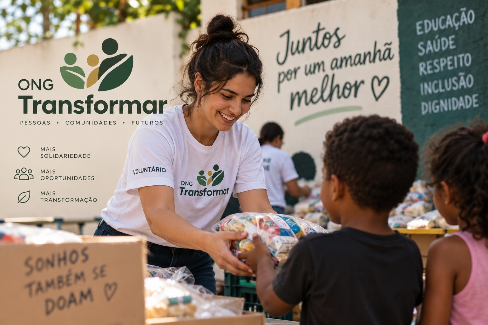

Solidariedade
Mobilizar pessoas para apoiar quem precisa.
Conheça iniciativas que aproximam pessoas, fortalecem comunidades e transformam oportunidades em realidade.

A ONG Transformar é um projeto acadêmico de uma organização dedicada à inclusão social, à solidariedade e à criação de oportunidades para a comunidade.
Mobilizar pessoas para apoiar quem precisa.
Promover participação e desenvolvimento comunitário.
Construir vínculos e fortalecer iniciativas sociais.
Localidade: São Paulo – SP
Este é um site demonstrativo: não há atendimento ou recebimento de doações reais.
Veja o formulário demonstrativo →